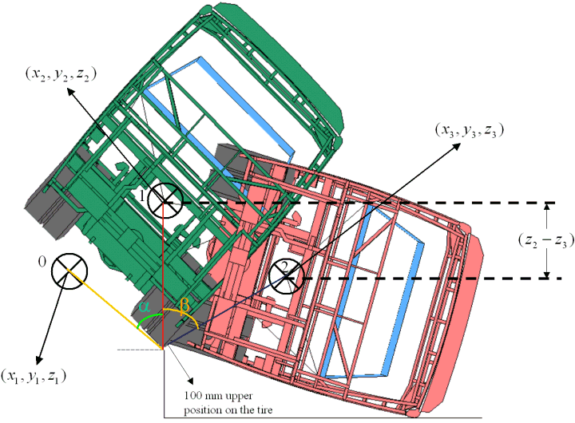
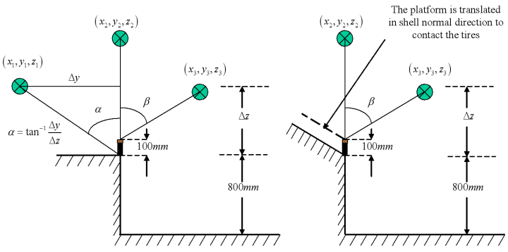

|
2. Hesaplama Modelinin Açýklanmasý
2.1.1 Sonlu Elemanlar Analiz Modeli
Komple aracýn sonlu elemanlar modeli 750.000 birinci dereceden eksplisit kabuk eleman, 103 kiriþ eleman ve 450.000 kütle elemandan oluþmaktadýr. Eleman boyutlarý kritik bölgelerde 10mm olarak atanmýþ (Hesaplamalarýn doðrulanmasýndan gelen teyit edilmiþ bir kabul); kritik olmayan bölgelerde ise boyutlarý 40mm'ye varan elemanlar kullanýlmýþtýr. Profil geniþliði boyunca eleman sayýsý üst yapý için en az 3 iken, bu sayý, devrilme sýrasýndaki deformasyon açýsýndan önemli olan yan-duvar kolonlarý (Pillar) için 4'tür.
Tüm deforme-olabilir bölgeler 4 düðüm noktalý, kalýnlýk boyunca 3 integrasyon noktasýna sahip Belytschko-Tsay kabuk elemanlarý ile modellenmiþtir [12]. Kabuk eleman formülasyonu, LS-DYNA'da kullanýlmasý mümkün olan indirgenmiþ integrasyonlu Belytschko-Lin-Tsay formülasyonuna dayanmaktadýr [13]. Bu eleman genellikle hesaplama süresi açýsýndan verimli ve sonuçlar açýsýndan hassas olarak nitelendirilir. Geçmiþten beri çarpma dayanýklýlýðý simülasyonlarýnýn temelini 4 düðüm noktalý Belytschko-Tsay kabuk elemanlarý oluþturmaktadýr.
Parçalarýn kalýnlýk ve malzeme bilgileri, sonlu elemanlar simülasyon aðý örülmesi tamamlandýktan sonra ANSA'daki LS-DYNA arabirimi (Input Deck) kullanýlarak eklenmiþtir. Öndeki ve en arkadaki biribiri üzerine uzanan kolonlar arasýndaki baðlantý, kolonlarýn çevresi boyunca punto kaynak elemanlarý (LS-DYNA Spotweld element) kullanýlarak tesis edilmiþtir.
Rijit modellenmiþ olan klima ile deforme-olabilir yapý arasýndaki baðlantý ise, mantýklý bir kesit alanýna ve tavanda herhangi ekstra bir mukavemete neden olmamasý için deforme-olabilir malzeme modeline sahip kiriþ elemanlar tarafýndan tesis edilmiþtir.
Çýplak yapýya sonlu elemanlar aðý örülmesi tamamlandýktan sonra, belli bir yöntem takip edilerek kütleler yerleþtirilmiþtir. Öncelikle, HD SAFARI 12.8m aracýnýn kütlelerinin bir listesi hazýrlanmýþtýr. Motor, diþli kutusu, klima ve yakýt deposu kabaca 3 boyutlu rijit parçalar olarak modellenmiþ, eylemsizlikler analitik olarak hesaplanmýþ ve parçalarýn yaklaþýk olarak aðýrlýk merkezinde bulunan birer temsili düðüm noktasýna atanmýþtýr. Akslar rijit kiriþ elemanlarý kullanarak modellenmiþ ve kütle ve eylemsizlikler ayný yöntem kullanýlarak atanmýþtýr. Araç üzerinde konsantre olarak yeralan kütleler (akü, yedek lastik, defroster, þaft, ön panel, radyatör, vs...) kütle elemanlarý kullanarak, yayýlý kütleler ise ilgili bölgenin yoðunluðu deðiþtirilerek uygulanmýþtýr.
2.1.2 Aðýrlýk merkezinin ölçülmesi
Aracýn aðýrlýk merkezi, TEMSA'da bir test platformu kullanýlarak ölçülmüþtür. Ölçülen deðerler sonlu elemanlar modelinden gelenlerle iyi bir uyuþma göstermiþtir. Ölçülen ve hesaplanan aðýrlýk merkezlerini aynen uyuþturmak için sonlu elemanlar modelinde motorun, diþli kutusunun ve akslarýn aðýrlýk merkezleri hassas bir þekilde ayarlanmýþtýr.
Yaþam Mahali Modeli
Çalýþma süreci LS-PRE'de (LS-DYNA öniþlemcisi) yaþam alanýnýn tanýmlanmasýna geldiðinde, ECE- R66 yönetmeliðindeki ifade yaþam alaný modelinin temelini oluþturmuþtur. Yaþam Mahali, tüm araç boyunca, yolcularýn ayaklarýnýn altýndaki tabanýn 500mm üzerinde, araç iç yan yüzeyine 300mm mesafede olacak þekilde ortaya yerleþtirilmiþtir. Trim kalýnlýklarý da dikkate alýnarak bu deðerlere eklenmiþtir. Yaþam Mahali modeli, her kesitte (10 kesit) tabanýn altýndaki stiff bölgeye baðlanmýþ rijit kiriþ çeçevelerden oluþmaktadýr. Bu çerçeveler arasýnda bir katý baðlantý bulunmamaktadýr; þekildeki kabuk elemanlarý, sadece görüntü için, "Null-Material" adý verilen etkisiz bir malzeme modeli ile oluþturulmuþtur. (Þekil 1 ve Þekil 2)
Malzeme modeli
Malzeme bilgisini elde etmek için TÜV Automotive tesislerinde muhtelif parçalar üzerinde çekme deneyleri uygulandý. Gerçek gerilme-genleme eðrileri (True Stress-Strain Curves) elde edildi ve LS-DYNA'ya girildi. Deforme-olabilir yapý için LS-DYNA'da kullanýlan malzeme modeli "MAT Type 24, "Piecewise Linear Isotropic Plasticity" adý verilen modeldir [14]. Bu model, eðer gerilmeler akma gerilmesinin altýndaysa Young modülünü, gerilmeler akma gerilmesinin üstündeyse ölçülmüþ gerilme-genleme eðrisini kullanan elasto-plastik bir malzeme modelidir. Rijit parçalar, (Motor, diþli kutusu, yakýt deposu, akslar, vb.) " Rigid Material, MAT Type 20" adý verilen malzeme ile modellenmiþtir. Yaþam Mahali'nin tanýmlanmasý için ise "MAT Type 9, Null Material" kullanýlmýþtýr.
3. LS-DYNA Çözümü
Bu aþamada, LS-DYNA'da doðrusal olmayan eksplisit dinamik çözüm gerçekleþtirildi. ECE-R66 yönetmeliðinde belirtilen formüle göre toplam enerji:
E*=0,75Mgh 'dir.
Burada M, otobüsün kütlesi (Unladen vehicle kerb mass), g yerçekimi ivmesi, ve h=z2-z3 'tür. (Þekil 5)
Bu enerji araca, aracýn tüm parçalarýna bir eksen etrafýnda dönme hýzý verilerek uygulanmýþtýr. h, serbest düþme durumundaki aracýn aðýrlýk merkezi (z2) ile, yer ile temasta olacak þekilde kinematik olarak çevrilmiþ aracýn aðýrlýk merkezi (z3) arasýndaki düþey mesafedir.
Önce model, x ekseni etrafýnda, tüm aracýn kütle merkezi en yüksek olduðu duruma ulaþýncaya dek döndürülür. Bu noktada aðýrlýk merkezinin z yönündeki koordinatý kaydedilir. Ardýndan otobüs 100 mm'lik engel etrafýnda araç yere deðinceye dek döndürülür. (Yerin ve karþýlýk gelen araç yapýsýnýn kabuk eleman kalýnlýðý gözönüne alýnarak arada belirli bir offset býrakýlýr.) Aracýn aðýrlýk merkezinin bu konumdaki z koordinatý da kaydedilir. Daha sonra bu iki nokta arasýndaki düþey mesafe hesaplanýr. (h)
Ýlk hýz atanmasý, LS-DYNA keyword'ü *INITIAL_VELOCITY_GENERATION ile yapýlmýþtýr [14].

Þekil 5. Otobüsün yer ile temas konumuna kadar döndürülmesi.
Modelin tüm yüzeyleri tek bir temas (Contact) grubu olarak tanýmlanmýþ, böylece çok sayýda kendi kendine temas eden bölge etkili olarak gözönüne alýnabilmiþtir. Tüm parçalar arasýndaki statik sürtünme katsayýsý 0.1 olarak ayarlanmýþ, dinamik sürtünme katsayýsý ise sürtünme katsayýsýnýn temas durumundaki parçalar arasýndaki göreceli hýza (v-rel) baðlý olduðunu kabul eden "varsayýlan deðere" ayarlanmýþtýr.
Kütle ölçeklemesi (Mass Scaling) en küçük boyutlara sahip 100 elemana uygulanmýþ, genel kütlede ihmal edilebilir bir deðiþimle ve toplam harcanan bilgisayar zamanýnda (Elapsed Time) iyi bir tasarrufla sonuçlanmýþtýr.
Genelde eksplisit hesaplamalarda büyük dönme hareketleri altýndaki parçalara uygulanan Nesnel Gerilme Güncellemesi (Objective Stress Update, OSU) özelliði devreye alýnmýþtýr.
*CONTROL_SHELL keyword'ündeki kabuk eleman kalýnlýðý deðiþimi özelliði, zar genlemesinin (Membrane strain) deformasyon sýrasýnda kalýnlýk deðiþimine sebep olacaðý kabul edilerek etkili kýlýnmýþtýr [14].
Çözümler LS-DYNA'nýn Paralel Bellek Paylaþým (Shared Memory Parallel, SMP) versiyonunda gerçekleþtirilmiþtir. Analiz süresi, her 5000 zaman adýmýnda bir sonuç çýktýsý talep edilerek 300ms olarak belirlenmiþtir. Analiz, 4 adet P5 iþlemcili bir AIX IBM P5+ serisi iþ-istasyonunda, modelin karmaþýklýðýna baðlý olarak 20-22 saat olarak gerçekleþmiþtir.

Þekil 6. Tüm modele ilk hýz atanmasý için enerji hesabý.
|